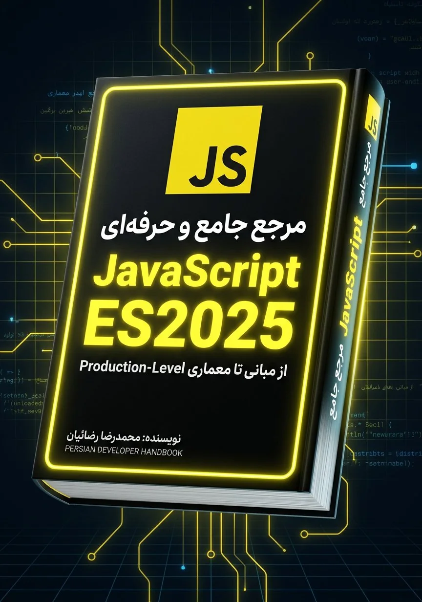

مدل ذهنی، نه حفظ API
Scope، Closure، this، Prototype و Event Loop با تمرکز بر چرایی رفتار زبان توضیح داده میشوند.
از مدل ذهنی زبان تا معماری و کد آمادهٔ محیط Production
مسیر فارسی و پروژهمحور برای فهم رفتار JavaScript؛ از Scope، Closure و Event Loop تا V8، امنیت، تست و معماری تمیز.

محتوا از مفهوم به تصمیم فنی و از تصمیم به پیادهسازی میرسد؛ با توضیحهای متمرکز، مثالهای واقعی و یک مسیر روشن برای ادامهٔ یادگیری.
Scope، Closure، this، Prototype و Event Loop با تمرکز بر چرایی رفتار زبان توضیح داده میشوند.
قابلیتهای مدرن زبان در کنار مرزبندی روشن میان APIهای پایدار، الگوهای جدید و کد Legacy.
مثالهای مرحلهای و ۸ مینیپروژه برای تبدیل مفهوم به مهارت حل مسئله و طراحی کد.
Hidden Class، بهینهسازی اجرا، Garbage Collection و Memory Leak با نگاه عملی.
تست، امنیت، مدیریت خطا، ابزارهای ساخت و اصول نگهداریپذیری در پروژههای واقعی.
نکات کلیدی، خطاهای رایج، واژهنامه و پرسشهای سطحبندیشده برای مرور هدفمند.
ساختار فصلها از پایه به Production حرکت میکند؛ میتوانید کتاب را پیوسته بخوانید یا از بخش متناسب با نیاز فعلی خود شروع کنید.
انواع داده، Scope، توابع، Closure، اشیا، Prototype، this و مقدمهٔ برنامهنویسی ناهمگام.
Iterator، Generator، Promise، Event Loop، ESM، Proxy، برنامهنویسی تابعی و APIهای مرورگر.
Performance، V8، حافظه، امنیت، تست، Tooling، TypeScript و معماری تمیز.
ترفندهای کاربردی، مینیپروژهها، اشتباهات رایج، پرسشهای مصاحبه، واژهنامه و نقشه راه.
نمونههایی واقعی از جلد، ساختار فصل، کد، کارگاه و بخش مصاحبه. برای مشاهدهٔ نسخهٔ کامل هر صفحه، روی تصویر کلیک کنید.
مثالها فقط سینتکس را نمایش نمیدهند؛ هر قطعه کد برای توضیح یک مدل ذهنی، یک تصمیم طراحی یا یک هزینهٔ اجرایی انتخاب شده است.
export function memoize(fn) { const cache = new WeakMap(); return function cached(input) { if (cache.has(input)) return cache.get(input); const result = fn(input); cache.set(input, result); return result; }; }
همهٔ خروجیهای رسمی از همین صفحه و مخزن پروژه در دسترساند.
نسخهٔ رنگی و قابل جستوجو برای مطالعه روی دسکتاپ و تبلت.
دانلود PDFنسخهٔ بازچینشپذیر برای موبایل، تبلت و نرمافزارهای مطالعه EPUB.
دانلود EPUBمتن فصلها، ابزار ساخت PDF و داراییهای پروژه در مخزن عمومی نگهداری میشوند.
مشاهده مخزناین سه راهنما با زبان بصری و ساختار آموزشی هماهنگ طراحی شدهاند: ابتدا زبان، سپس کتابخانهٔ رابط کاربری و در پایان فریمورک Production.